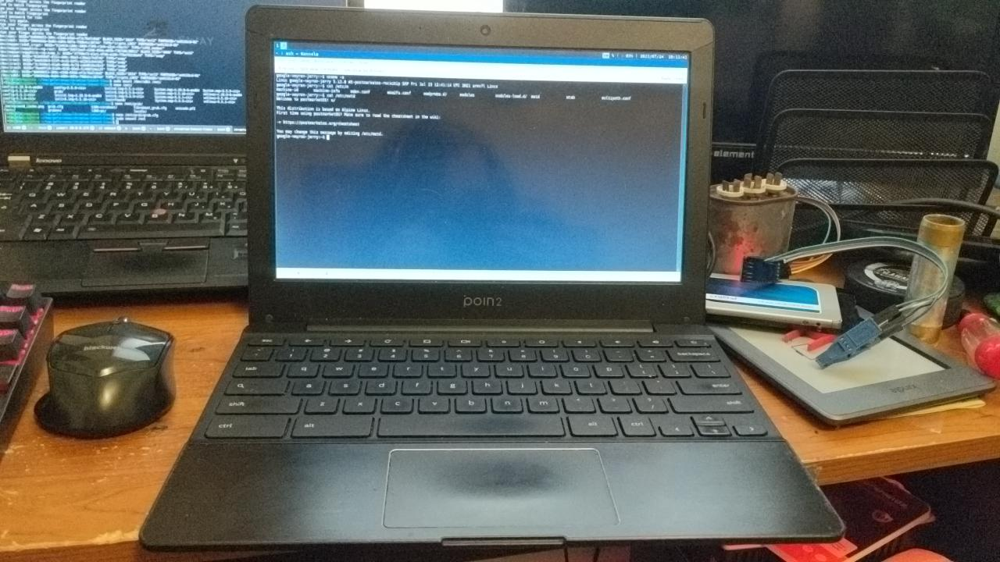

Poin2 Chromebook 11 (google-veyron-jerry)
| This device page also represents next devices: CTL Chromebook J2 / J4, CDI eduGear Chromebook K, Epik Chromebook ELB1101, HiSense Chromebook 11, Mecer Xpression V2, NComputing Chromebook CX100 / CX110, Positivo Chromebook CH1190, VideoNet Chromebook BL10. Some of them are not tested. If you cannot get something from this list to work, open an issue in https://gitlab.com/postmarketOS/pmaports. |
|
 Veyron Jerry Chromebook | |
| Manufacturer | Poin2 |
|---|---|
| Name | Chromebook 11 |
| Codename | google-veyron-jerry |
| Released | 2015 |
| Category | testing |
| Original software | ChromeOS |
| Hardware | |
| Chipset | Rockchip RK3288 |
| CPU | 4x 1.8 GHz Cortex-A17 |
| GPU | Mali-T760 MP4 |
| Display | 1366x768 |
| Storage | 16 GB eMMC |
| Memory | 2 GB |
| Architecture | armv7 |
| Unixbench Whet/Dhry score | 1921.2 |
{kind=link}
| USB Networking |
Unavailable
|
|---|---|
| Flashing |
Unavailable
|
| Touchscreen |
Unavailable
|
| Display |
Works
|
| WiFi |
Works
|
| FDE |
Works
|
| Mainline |
Works
|
| Battery |
Works
|
| 3D Acceleration |
Works
|
| Audio |
Works
|
| Bluetooth |
Works
|
| Camera |
Broken
|
| Camera Flash | |
| GPS |
Unavailable
|
| Mobile data |
Unavailable
|
| SMS |
Unavailable
|
| Calls |
Unavailable
|
| USB OTG / USB-C Role switching |
Unavailable
|
| NFC |
Unavailable
|
| Accelerometer |
Unavailable
|
|---|---|
| Magnetometer |
Unavailable
|
| Ambient Light |
Unavailable
|
| Proximity |
Unavailable
|
| Hall Effect |
Works
|
| Barometer |
Unavailable
|
| Power Sensor |
Unavailable
|
| Keyboard |
Works
|
|---|---|
| Touchpad |
Works
|
| USB-A |
Works
|
| HDMI/DP |
Works
|
| Ir TX |
Unavailable
|
| Ir RX | |
| Stylus | |
| Haptics | |
| Ethernet | |
| FOSS bootloader |
Partial
|
| Primary Bootloader | |
|---|---|
| Secondary Bootloader |
Works
|
| Mainline |
Broken
|
| Internal Storage | |
| SD card |
Works
|
| USB Host | |
| USB Peripheral |
Unavailable
|
| Display |
Works
|
| Keyboard |
Works
|
| Buttons |
Unavailable
|
Contents
Contributors
- tvall
- Jenneron
Users owning this device
Installation
Device comes stock with coreboot and depthcharge. depthcharge is annoying to work with in my opinion, and the version included on this device does not support loading an initramfs. so the first step is to get a bootloader that works properly and ideally doesnt get in out way loading for us. it should be possible to build a new version of coreboot+depthcharge, but there is not much documentation and what is there is old and broken. U-Boot should be able to replace coreboot and depthcharge, but i havent had luck getting it to work properly standalone, so our best option is chainloading an older version from depthcharge.
U-Boot
The latest known-to-work version is 2017.07.
chainloading
Chainloading is safest with no chance of bricks, if something goes wrong you can just restore using the chromeos recovery image. will write instructions later
info on chainloading u-boot https://github.com/hexdump0815/u-boot-chainloading-for-arm-chromebooks/blob/master/readme.cbr
the goal is to write uboot.kpart.cbr-jerry to one of the kern partitions and set it bootable.
If you are stating from a fresh ChromeOS install:
1. enable developer mode (hold esc+refresh then hit power. hit ctrl+d at recovery screen)
2. connect to wifi.
3. Ctrl+alt+F2 (right arrow)
4. login, username should be chronos
5. curl -LO https://github.com/hexdump0815/imagebuilder/releases/download/210613-03/uboot.kpart.cbr-jerry
6. sudo dd if=uboot.kpart.cbr-jerry of=/dev/mmcblk0p4
7. sudo cgpt add -i 4 -S 1 -T 15 -P 15 /dev/mmcblk0
8. reboot. you should now boot to u-boot after the dev-mode warning screen and can boot postmarketos from sd.
U-Boot on SPI
preferred method, but with some chance of brick. can't seem to get kernel to boot properly, ignore this for now.
$ git clone https://github.com/u-boot/u-boot
$ make -j8 O=b/chromebook_jerry CROSS_COMPILE=arm-none-eabi- chromebook_jerry_defconfig all
$ ./b/chromebook_jerry/tools/mkimage -n rk3288 -T rkspi -d b/chromebook_jerry/spl/u-boot-spl.bin spl.bin && dd if=spl.bin of=spl-out.bin bs=128K conv=sync && cat spl-out.bin b/chromebook_jerry/u-boot-dtb.img >out.bin && dd if=out.bin of=out.bin.pad bs=4M conv=sync
// copy out.bin.pad to chromebook
$ sudo flashrom -p linux_mtd -w out.bin.pad
Audio
See ASUS_Chromebook_C201_(google-veyron-speedy)#Audio.
See also
- pmaports!2318 Initial merge request